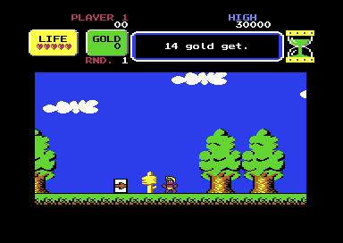
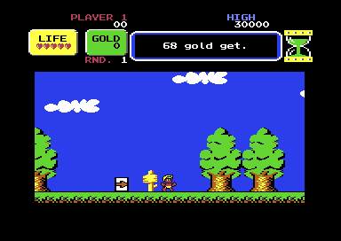
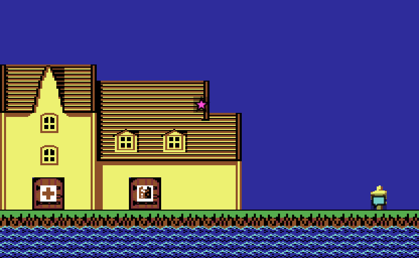
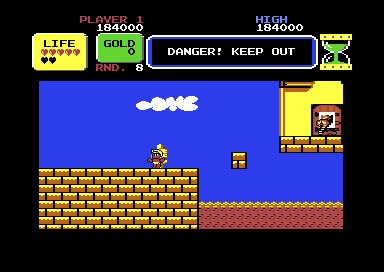
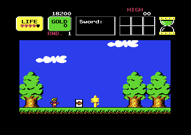

<meta charset="utf-8">
<meta name="viewport" content="width=device-width, initial-scale=1">
<title>{{title}} · Discoveries</title>
<link rel="preconnect" href="https://fonts.googleapis.com">
<link rel="stylesheet" href="https://fonts.googleapis.com/css2?family=Lato:wght@400;700;900&family=IBM+Plex+Mono:wght@400;500&display=swap">
<style>
:root{
  --bg:#23262d; --paper:#e9e7e1; --surface:#ffffff; --surface-2:#f1efea; --line:#d5d3cc; --line-soft:#e0ded8;
  --ink:#2f3136; --ink-soft:#55585f; --ink-mute:#80838a;
  --link:#1f5fa8; --link-hover:#154480; --accent:#1f5fa8;
  --amber:#c25a00; --cyan:#1f5fa8; --coral:#d04a3a; --green:#2a8a4a; --violet:#4a5bd6; --hl:#fff0c2;
  --chip:#2f3136; --chip-ink:#ffffff;
  --c64blue:#40318d; --c64grey:#686868;
  --fd:'Lato',system-ui,sans-serif; --fb:'Lato',system-ui,sans-serif; --fm:'IBM Plex Mono',ui-monospace,Menlo,monospace;
  --col:1080px; --gx:68px; --fs:17px; --lh:1.6; --hw:900; --h1:46px; --h2:26px; --sy:48px; --pp:26px; --r:10px;
  --plate-shadow:0 1px 2px rgba(0,0,0,.05),0 4px 14px rgba(0,0,0,.05);
}
*{box-sizing:border-box}
html{background:var(--bg);min-height:100%}
body{background:var(--paper);color:var(--ink);font-family:var(--fb);font-size:var(--fs);line-height:var(--lh);max-width:var(--col);margin:0 auto;min-height:100vh;padding:0 0 4rem}
h1,h2,h3{font-weight:var(--hw);letter-spacing:-.01em;text-wrap:balance;color:var(--ink);margin:0}
.wrap{padding:0 var(--gx)}
.hero{padding:48px var(--gx) 8px;text-align:left}
.eyebrow{font-family:var(--fm);font-size:12px;letter-spacing:.08em;text-transform:uppercase;color:var(--ink-mute);margin:0 0 10px}
.hero h1{font-size:var(--h1);line-height:1.15;letter-spacing:-.02em;margin:0 0 14px}
.hero .sub{margin:0 0 .6em;color:var(--ink-soft)}
section{padding:var(--sy) 0 24px}
section:last-of-type{border-bottom:none}
.fig{font-family:var(--fm);font-size:12px;letter-spacing:.08em;text-transform:uppercase;color:var(--ink-mute);margin:0 0 10px}
h2.t{font-size:var(--h2);margin-bottom:12px}
.lede{color:var(--ink-soft);margin:0 0 30px}
.plate{background:var(--surface);border:1px solid var(--line);border-radius:var(--r);padding:var(--pp);box-shadow:var(--plate-shadow)}
.cap{font-size:14px;color:var(--ink-mute);margin-top:14px;line-height:1.55}
.cap b{color:var(--ink);font-weight:700}
code{font-family:var(--fm);font-size:.82em;background:var(--chip);color:var(--chip-ink);border-radius:4px;padding:2px 6px;overflow-wrap:break-word;-webkit-box-decoration-break:clone;box-decoration-break:clone}


table{border-collapse:collapse;width:100%}th,td{text-align:left;padding:.5rem;border-bottom:1px solid var(--line)}
.wb-controls{display:flex;gap:1rem;flex-wrap:wrap}.wb-controls label{display:grid;gap:.3rem;font-weight:700}.wb-result{font-weight:700;font-size:1.2rem;color:#225f3d}.wb-map-preview{display:flex;align-items:flex-start;gap:1.5rem;flex-wrap:wrap}.wb-map-preview img{max-width:100%;width:384px;image-rendering:pixelated}.wb-map-preview>div{flex:1;min-width:240px}
.wb-pair{display:grid;grid-template-columns:repeat(auto-fit,minmax(240px,1fr));gap:1rem}.wb-pair figure{margin:0}.wb-pair img{width:100%;image-rendering:pixelated;border-radius:4px}.wb-pair figcaption{font-size:14px;color:var(--ink-mute);margin-top:.3rem}
.wb-bytes{display:grid;gap:.6rem;margin:0 0 1rem}.wb-bytes>div{display:flex;align-items:stretch;gap:6px;flex-wrap:wrap}.wb-bytes b{width:11rem;font-size:15px;align-self:center}.wb-bytes span{font-family:var(--fm);font-size:15px;border:2px solid var(--line);border-radius:4px;padding:.25rem .6rem;min-width:7.5rem;display:grid}.wb-bytes span small{font-family:system-ui,sans-serif;font-size:12px;color:var(--ink-mute)}.wb-bytes span.hit{border-color:#c0392b}
</style>

<!-- tabs -->
<header class="hero"><p class="eyebrow">Commodore 64 · Discoveries</p><h1>Super Wonder Boy in Monster Land</h1><p class="sub">The arcade game's best-known money trick works on the Commodore 64 too, and the same odd number is behind it.</p></header>
<main class="wrap">
<section id="reversal"><p class="fig">01 · Hidden money</p><h2 class="t">The arcade's joystick wiggle pays 65 gold on the Commodore 64 too</h2>
<p>In the arcade game, players wiggled the joystick left and right as hidden money came out of the ground, hoping for a bigger payout. In 2024 a player who made a tool-assisted run of the arcade version found why it works. If the hero changes direction just before the money appears, the game stores the amount as the number 255, and that number pays 65 gold.</p>
<p>The Commodore 64 version does the same. As a money bag or coin appears, it compares the joystick's last two readings. If the stick went from left to right, or from right to left, it stores 255 as the amount. The amount is meant to be two decimal digits, from 00 to 99, and 255 is not a valid one. When the hero picks the money up, the game adds a random 0 to 4 in decimal arithmetic, and the invalid number comes out as 65 to 69. It does not work while the hero is climbing, because the game skips the check then, but a change of direction in mid-jump still counts. The two screenshots show the same bag in round 1, picked up both ways.</p>
<div class="plate"><div class="wb-pair"><figure><figcaption>Walking onto the spot: “14 gold get.”</figcaption></figure><figure><figcaption>Changing direction as the bag appears: “68 gold get.”</figcaption></figure></div>
<p class="cap">The arcade explanation is in the <a href="https://tasvideos.org/Forum/Topics/25336">TASVideos thread about that run</a>. On the Commodore 64, the check is at <a href="source-resident.html#5C0C"><code>$5C0C</code></a> and the payout at <a href="source-resident.html#771F"><code>$771F</code></a>. <a href="index.html#reward">Try every combination of readings →</a></p></div></section>
<section id="contact-patch"><p class="fig">02 · Baraboro</p><h2 class="t">Secret: a spot on Baraboro's roofs makes the hero immune to every enemy</h2>
<p>Load 9 is Baraboro, the coastal town of round 4. Its list of special spots holds one at column 43, row 6, high on the roofs. When the hero stands there, the game rewrites the first two bytes of the routine that checks whether an enemy is touching him, so that it always answers no. From then on no enemy can hurt him by touch. The same moment raises the life meter and its limit to ten hearts, gives him a revival medicine and shows “Something wonderful has happened...”.</p>
<p>The spot sits at the top corner of the higher roof. The hero's highest jump there ends at row 7, one row below it.</p>
<div class="plate"><div class="wb-pair"><figure><figcaption>Baraboro's roofs, drawn from the load's map. The star marks column 43, row 6.</figcaption></figure></div>
<p class="cap">The spot's code is at <a href="source-stage-09.html#92F7"><code>$92F7</code></a> in load 9. It writes <code>CLC</code> and <code>RTS</code> over the start of the contact routine at <a href="source-resident.html#7227"><code>$7227</code></a>, sets the meter at <code>$4DCD</code> and its limit at <code>$4DCF</code> to 80, eight to a heart, and shows the message at <a href="source-stage-09.html#932E"><code>$932E</code></a>. <a href="levels.html">See the whole map →</a></p></div></section>
<section id="counter-price"><p class="fig">03 · Healing</p><h2 class="t">Bug: the healing counter never raises its price</h2>
<p>Loads 4, 9, 19, 20 and 30 each have a counter where the hero pays gold to have his life meter filled. Everything for a price that climbs is there. Each load carries a list of seven prices, 20, 40, 70, 100, 110, 120 and 130 gold, and the game counts each player's visits, adding one after every visit it is paid for. But the instruction that reads the price picks the entry by the player's number instead of the count. The first player pays 20 gold every time. In the hidden two-player game, the second player would pay 40 every time.</p>
<div class="plate"><div class="wb-bytes"><div><b>What the code does</b><span>count of visits<small>loaded, then left unused</small></span><span class="hit">price list, entry by player<small>1st player: 20 gold</small></span></div></div>
<p class="cap">In load 4 the price is read for the panel at <a href="source-stage-04.html#A4B9"><code>$A4B9</code></a> and again, to be taken from the gold, at <a href="source-stage-04.html#A595"><code>$A595</code></a>. Each time, the instruction before the read loads the visit count from <code>$528C</code> into the Y register, and the read itself, <code>LDA $A679,X</code>, uses the X register, which holds the player's number. The count goes up at <a href="source-stage-04.html#A5B1"><code>$A5B1</code></a>. The copies in the other four loads make the same slip. <a href="#two-player">About the two-player game →</a></p></div></section>
<section id="trigger-opcode"><p class="fig">04 · Messages</p><h2 class="t">Bug: the DANGER! KEEP OUT sign damages its own code</h2>
<p>At the start of round 8, one step to the left shows the warning “DANGER! KEEP OUT”. It looks like every other message in the game, but behind it the sign's code changes one of its own instructions into a different one.</p>
<p>Each message spot runs a few instructions that put a number aside, show the message, and then take the number back. An instruction is a command byte, saying what to do, followed by a value byte. To keep the number, the code writes it over the value byte of the instruction that later takes it back. The loads hold ten copies of this code. Nine write the number to the value byte. The warning's copy writes it one byte too early, over the command byte. The instruction that should load the number back becomes a different command, which reads a byte of memory and combines it with the number in the processor's main register. The code that runs after it uses neither number, so the player sees nothing wrong.</p>
<div class="plate"><div class="wb-bytes"><div><b>Nine copies</b><span>$A2<small>command: load the number</small></span><span class="hit">the number<small>value, written here</small></span></div><div><b>The warning's copy</b><span class="hit">$01<small>command, overwritten</small></span><span>$FF<small>value</small></span></div></div><div class="wb-pair"><figure><figcaption>One step left from the start of round 8. As the warning appears, the instruction byte at <code>$9514</code> changes from <code>$A2</code> to <code>$01</code>.</figcaption></figure></div>
<p class="cap">The warning's code is at <a href="source-stage-23.html#950A"><code>$950A</code></a> in load 23. Its store goes to <a href="source-stage-23.html#9514"><code>$9514</code></a>, the command byte of <code>LDX #$FF</code>, where it should go to the byte after it. The warning is the second spot of the load, so the number is 1, and command 1 is <code>ORA ($FF,X)</code>. The welcome message's copy, at <a href="source-stage-01.html#9293"><code>$9293</code></a> in load 1, stores to the right byte.</p></div></section>
<section id="two-player"><p class="fig">05 · Cut content</p><h2 class="t">Secret: a two-player game is hidden in the code</h2>
<p>The status panel says PLAYER 1 above the score, but the title screen never offers a second player. The code for one is still there, switched off by a single setting. With that setting turned on, the score at the right of the panel shows the second player's score where the high score was, the game picks the hero's colours by which player is playing, and at the end of an area, after the count that turns the first player's hearts into points, the game starts the second player's turn.</p>
<p>Only one instruction in the game writes the setting, and it writes 0, the value for one player, at the start of every game. The two-player game cannot be started without changing memory.</p>
<div class="plate"><div class="wb-pair"><figure><figcaption>Round 1 with the two-player setting turned on by hand. The left-hand score, 18200, is the first player's; the PLAYER 1 label above it is gone. The right-hand score is the second player's, 00, still under the word HIGH.</figcaption></figure></div>
<p class="cap">The setting is at <code>$4DBC</code>. The only store to it is at <a href="source-resident.html#0378"><code>$0378</code></a>. The game reads it at <a href="source-resident.html#0716"><code>$0716</code></a> to start the second player's turn, at <a href="source-resident.html#129B"><code>$129B</code></a> for the hero's colours and at <a href="source-resident.html#3A0A"><code>$3A0A</code></a> for the right-hand score.</p></div></section>
<section id="add-credits"><p class="fig">06 · Continues</p><h2 class="t">The continue screen asks for coins</h2>
<p>When the life meter runs out, the game asks “Continue or not?”. Each game started from the title allows three continues. A continue fills the life meter again and goes on, but sets the score back to zero. After the third, choosing to continue only brings up “Add credits and select again.”, the arcade machine's request for another coin. A Commodore 64 has no coin slot, so the only way on is the other choice, which goes back to the title screen.</p>
<div class="plate"><p class="cap">The count is set to three at <a href="source-resident.html#032F"><code>$032F</code></a> when a game starts and spent at <a href="source-resident.html#0628"><code>$0628</code></a>, which also clears the score. With none left, <a href="source-resident.html#063F"><code>$063F</code></a> shows the message at <a href="source-resident.html#0678"><code>$0678</code></a>. <a href="graphics.html#visual-resources">See the continue screen →</a></p></div></section>
</main>
